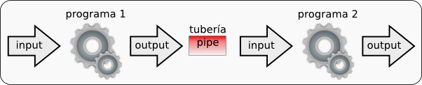

Flujos de información
Los programas en línea de comandos, además de poder leer y escribir en ficheros, pueden tomar argumentos como entrada, realizar una tarea e imprimir una salida en la pantalla.

Por ejemplo, al ejecutar el comando ls se imprime un listado en la pantalla. Esto que acaba siendo impreso en la pantalla constituye lo que se denomina un flujo de información.
Flujos de información estándar
En todos los sistemas Unix existen tres flujos de información:
- standard input (stdin): datos que se envian al programa
- standard output (stdout): datos que devuelve el programa
- standard error (stderr): flujo usado por los programas para enviar un informe de errores

Los flujos permiten, por ejemplo, conectar unos programas con otros de manera que el stdout de un programa se le pase a otro por stdin, o guardar el stdout y el stderr en ficheros diferentes.
Los flujos estándar se representan por un número:
- stdin: 0
- stdout: 1
- stderr: 2
Redirección del flujo estándar
El flujo estándar puede ser redirigido para que no se imprima en pantalla, sino que quede almacenado en un fichero. Para redirigir el flujo de información desde la pantalla a un fichero no necesitamos más que utilizar el símbolo > seguido del nombre de un fichero.
~$ ls > listado.txt
Si lo hacemos se creará un nuevo fichero y en él se escribirá lo que estaba destinado a la pantalla.
~$ ls
listado.txt
En el caso de que el fichero de salida exista previamente será eliminado y vuelto a crear.
Podríamos añadir contenidos al fichero antiguo sin borrarlo utilizando dos veces el símbolo mayor que ». Por ejemplo, añadir el listado de archivos y directorios del directorio anterior en el árbol de directorios.
~$ ls .. >> listado.txt
En los ejemplos anteriores, técnicamente lo que estamos haciendo redirigir el standard output. Sin emabargo, si ejecutamos el siguiente comando:
~$ ls -7 > listado.txt
Observaremos que el archivo listado.txt esta vacio y el programa habrá mostrado en pantalla un mensaje de error ya que la opción -7 no existe en ls. En este caso el programa envía el mensaje de error al flujo stderr, que no está siendo redirigido. Si quisiéramos redirigir también el stderr deberíamos indicarlo así:
~$ ls -7 2> error.txt
Este división de los flujos estándard nos permite guardanos por separado el resultado normal de un programa y los avisos de error
~$ ls > listado.txt 2> error.txt
Existe tambien la posibilidad de redirigir el stderr al stdout:
~$ ls > listado.txt 2>&1
Pipes
En Unix además de redirigir los flujos de información hacia un fichero podemos unir el flujo de salida de un programa con el de entrada de otro utilizando un pipe (tubería). El símbolo para el pipe es |.

Hagamos un ejemplo con los comandos wc (Word Count) y cat. wc sirve para contar líneas, palabras y caracteres. Veamos cuántos archivos y directorios hay en el directorio actual:
~$ ls > listado.txt
~$ wc listado.txt
7 7 80 listado.txt
Podríamos hacer lo mismo en un solo paso utilizando un pipe:
~$ ls | wc
7 7 80
En este caso la salida del comando ls (i.e., el standard output) ha sido redirigida a la entrada del comando wc (i.e., el standard input).
Esta técnica es una de las grandes fortalezas de los sistemas Unix ya que permite enlazar comandos sencillos para realizar tareas complejas y vamos a utilizarla ampliamente durante el curso.
Esta técnica posibilita, entre otras cosas, el procesamiento de los ficheros de texto de una forma potente y sencilla.
Ejercicios
-
Salva la ruta del directorio actual (pwd) en un archivo, muévete a otro directorio y añade la dirección actual al archivo creado
-
Haz fallar el comando mkdir y salva el mensaje de error en un fichero
-
¿Cuántas líneas tiene el manual de ps?
-
Para el comando pwd salva el standard error en un archivo y redirige el standard output también a ese archivo
Soluciones
1.- Salva la ruta del directorio actual (pwd) en un archivo, muévete a otro directorio y añade la dirección actual al archivo creado.
~$ pwd > directions.txt
~$ cd /bin/
/bin$ pwd >> ~/directions.txt
2.- Haz fallar el comando mkdir y salva el mensaje de error en un fichero.
~$ mkdir 2> error.log
3.- ¿Cuántas líneas tiene el manual de ps?
Si lo hiciéramos sin pipes:
~$ man ps > ps_manual.txt
~$ wc ps_manual.txt
1188 6276 53338 ps_manual.txt
Redirigiendo los flujos estandar con pipes
~$ man ps |wc
1188 6276 53338
4.- Para el comando pwd salva el standard error en un archivo y redirige el standard output también a ese archivo
~$ pwd 2> error.log 1>&2
Redigir el stdout al stderr en un principio no es algo común, suele hacerse al revés. Pero el ejercicio pretende demostrar que la redirección de flujos es posible en cualquier dirección